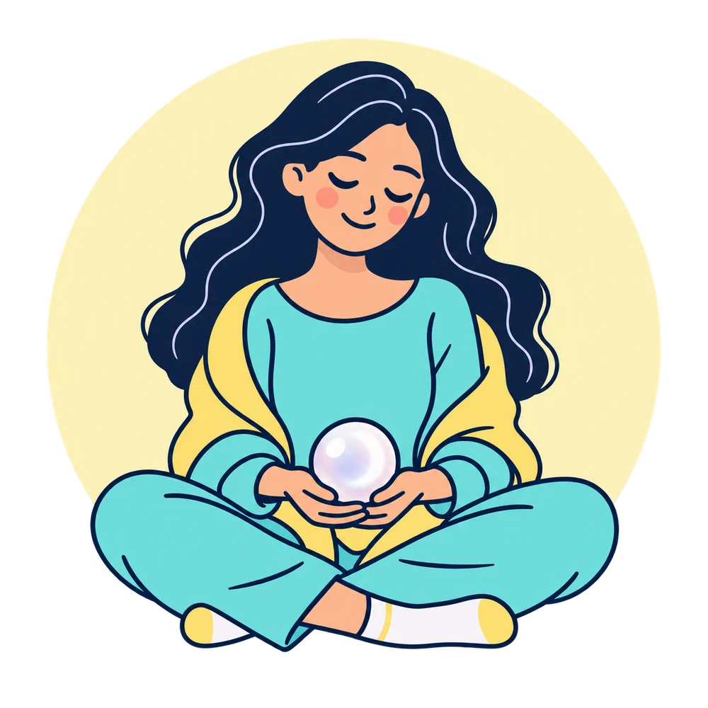
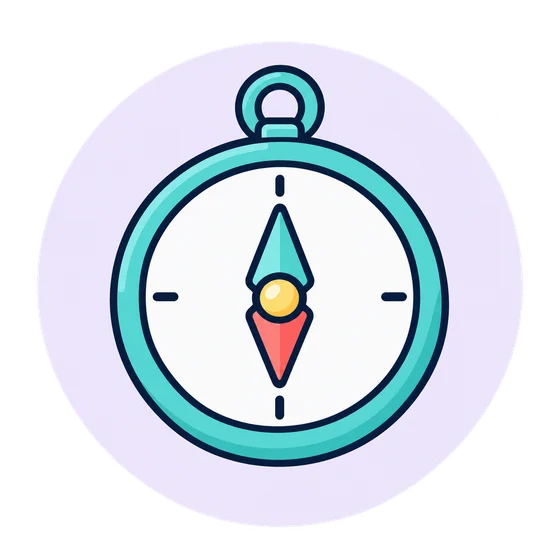

01 · Genius · Self-awareness
Discover your gifts
Notice the experiences, questions and capacities that make your contribution your own.
What this can hold
 Reflections & insights
Reflections & insights
 Personal knowledge
Personal knowledge
 Skills & gifts
Skills & gifts

Interests & direction